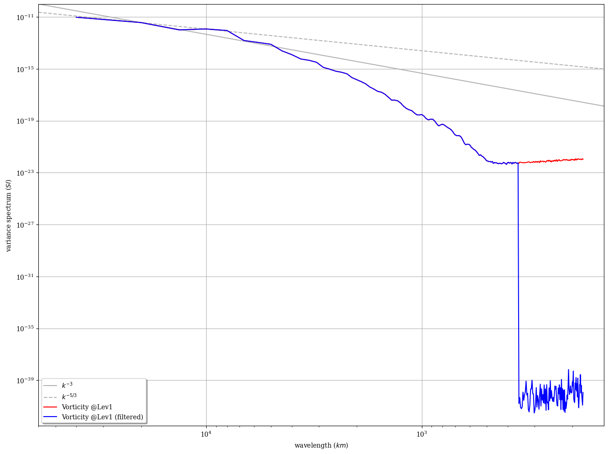

Spectral filtering (spectral round-trip at a lower truncation) for global fields¶
and vizualisation of differences as variance spectrum plot. Except for the truncation part, the approach proposed here using H2DField.spectrum() could also be used for limited-area fields.
[1]:
%matplotlib inline
# for figures in notebook
# import & initialize epygram
import epygram
epygram.init_env()
import os
INPUTS_DIR = os.path.join("..", "inputs")
# [2025/06/12-17:34:56][epygram.formats][<module>:0072][INFO]: Format: HDF5SAF is deactivated at runtime (Error: No module named 'h5py'). Please deactivate from config.implemented_formats or fix error.
# [2025/06/12-17:34:56][falfilfa4py][init_env:0089][WARNING]: ECCODES_DEFINITION_PATH env var is defined: may result in unexpected issues if not consistent with linked eccodes library
[2]:
res = epygram.open(
os.path.join(INPUTS_DIR, "bgstderr.arpege-unbal-ens.tl224+0003:00.grib"), "r"
)
field = res.readfield("shortName=vo,level=1")
In some specific cases, the spectral geometry of the field cannot be accessed from the field itself. For GRIB files for instance, it may have to be deduced from the grid-point geometry, in the case of global Gauss geometries. This can be done using the epygram.spectra.get_spectral_geometry() function.
[3]:
# Deduce spectral geometry of GRIB field from grid-point geometry
spgeom = epygram.spectra.get_spectral_geometry(field, res)
if spgeom is None:
spgeom = epygram.spectra.make_spectral_geometry(field.geometry)
# initial field spectrum with specified name
sp01 = field.spectrum("Vorticity @Lev1", spectral_geometry=spgeom)
field.sp2gp()
ecTrans at version: 1.6.0
commit: 2c4c818d79effe56d30bb2896866aba590a5fad8
Setup spectral transform
End Setup spectral transform
[4]:
# Set new spectral space
print(spgeom.truncation)
new_truncation = spgeom.truncation.copy()
new_truncation["max"] = spgeom.truncation["max"] // 2
print(new_truncation)
trunc_spgeom = epygram.geometries.SpectralGeometry("legendre", new_truncation)
# Spectral roundtrip
field.gp2sp(trunc_spgeom)
field.sp2gp()
# And compute filtered spectrum
sp01f = field.spectrum(sp01.name + " (filtered)", spectral_geometry=spgeom)
{'max': 224, 'shape': 'triangular'}
{'max': 112, 'shape': 'triangular'}
Setup spectral transform
End Setup spectral transform
[5]:
# and plot
fig, ax = epygram.spectra.plotspectra([sp01, sp01f])

[ ]: